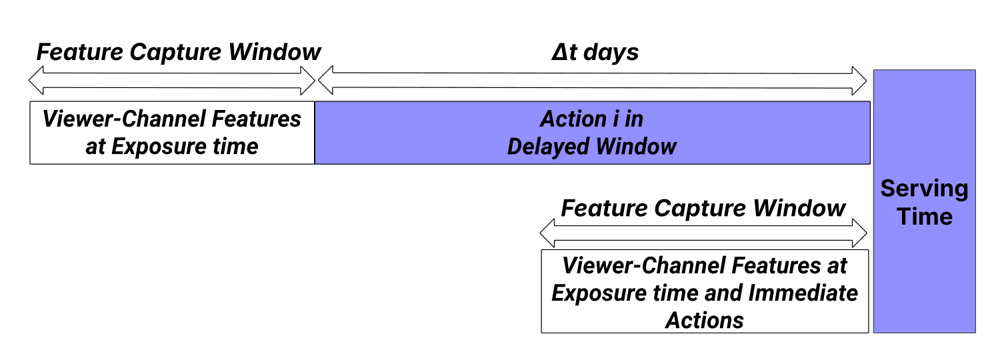
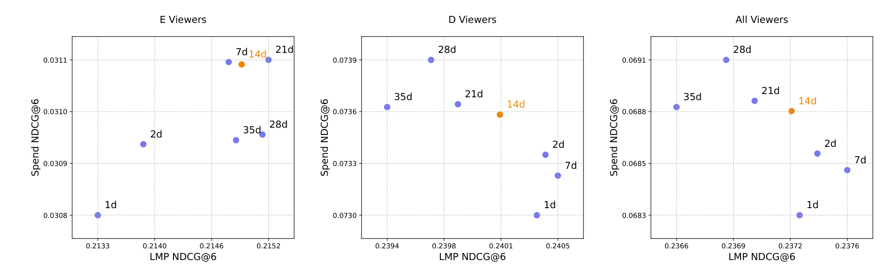
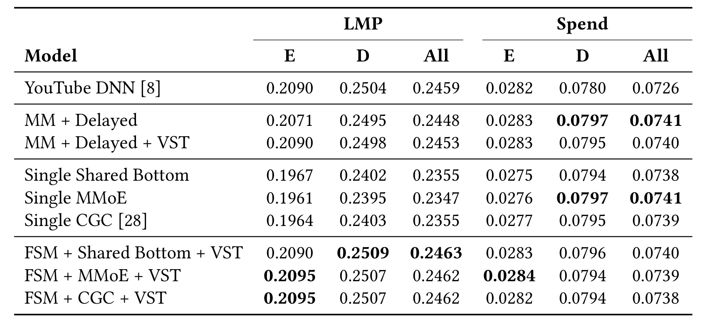
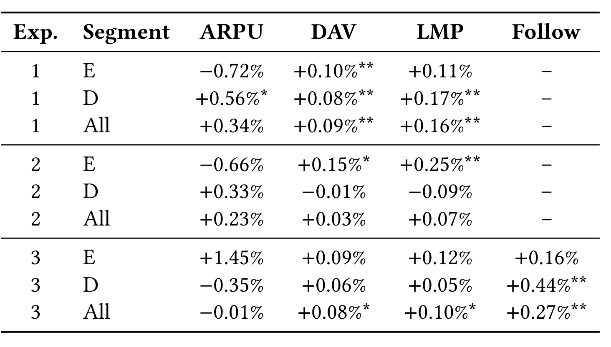
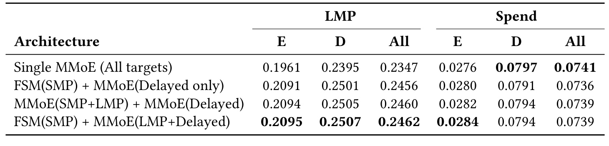

Multi-Objective Ranking for Live-Streaming 精读
论文 Multi-Objective Ranking for Live-Streaming: Balancing Fresh and Delayed Signals with Segment-Aware Targeting（直播多目标排序：以用户分层在新鲜与延迟信号之间取平衡）由 Xiaoyi Gu、Julia Tavares、Eder Santana、Carlos Mendoza-Cardenas、Nikita Mishra 与 Saad Ali 合作完成，一作主机构为 Twitch Interactive，合作作者还涉及 Amazon Prime Video；论文已被 RecSys 2026 Industry Track 接收，于 2026 年 8 月 5 日提交到 arXiv:2608.04455。本轮在论文入口、PDF 首页与公开关联信息中未核验到独立代码或项目页。本文不是提出一套更复杂的通用多任务骨干，而是把 Twitch 生产排序里的三个现实矛盾——标签稀疏、反馈延迟、生命周期分群偏差——拆成数据时间窗、模型分工和推理期标量化三个可独立上线的改造，再用分阶段 A/B 逐层验证。
直播观众会并发地产生观看、聊天、关注和消费等行为，这些行为的稀疏度与发生延迟并不相同；过早把未发生动作记为负例会污染监督，等待过久又会让训练数据陈旧，而高参与用户占据更多样本还会使统一排序权重偏向其需求。
1. 背景和问题
1.1 直播不是一条顺序转化漏斗
Twitch 的推荐链路是两阶段系统：召回阶段用双塔从数百万创作者中取回几十个频道，实时排序阶段再根据 viewer-channel 特征对候选频道排序。论文只改第二阶段。旧排序器以 SMP（Short-form Minutes Play） 为主要目标，即用户进入频道后是否观看达到较短阈值；新系统希望同时照顾更长时间的 LMP（Long-form Minutes Play）、聊天、关注和消费。这里的 objective、target 与 task 必须分开：engagement、retention、monetization 是业务目标，SMP/LMP/chat/follow/spend 是可观测动作目标，模型对每一种动作概率的预测才是训练任务。
这和电商中“曝光→点击→下单”的线性漏斗不同。观众可以先看很久但不聊天，也可以很早关注、几周后订阅；chat、follow、spend 彼此没有稳定的必经顺序。因而 ESMM、AITM 一类依赖顺序转化假设的架构不是本文的直接对照重点。论文给出的生产统计更能说明难度：在一百万观众七天、数百万曝光的分析里，短观看率约比点击率低 2.5 倍，长观看率低 3.4 倍，聊天率低约 20 倍，关注率接近低 90 倍，金钱交易还要更稀疏。若所有目标共享同一个采样时间和同一个模型容量，密集的浅层动作会决定大部分梯度，稀疏的深层动作既难学，也容易被过早构造的负样本淹没。
旧系统的 SMP 单目标并非错误：它密集、反馈快、容易持续训练，能够稳定表达“用户是否愿意点入并留下片刻”。问题在于 SMP 只能覆盖关系形成的最前端。主播生态还关心观众是否持续观看、进入聊天社区、关注频道以及通过订阅或礼物形成商业支持；这些目标对观众、主播与平台的意义不同，甚至会相互竞争。若只给 spend 较大权重，成熟高消费用户可能主导排序；若只追 SMP，新用户可能获得短期点击，却难以沉淀长期关系。因此本文不是把五个动作拼成一个更大的标签，而是坚持保留动作级概率，让排序层显式承担业务取舍。
这一设定也解释了为什么论文主要报告 point-wise 动作预测后的加权排序，而不是直接学习一个端到端长期价值。工业系统需要逐步上线、能按分群调整、能在 guardrail 触发时回退；动作级模型更便于定位某个目标的漂移。但它也留下概率可比性问题：SMP 与 spend 的基准率相差多个数量级，未经校准的概率乘权重后未必体现真实边际价值。论文把权重当作离线筛选加线上 A/B 的策略参数，未公开统一价值尺度或长期因果回报模型。
1.2 延迟监督在“完整”与“新鲜”之间冲突
关注、订阅或礼物消费常常不是一次曝光后的立即响应。用户可能多次观看同一主播，建立熟悉感以后才关注或付费。若数据管道只看曝光后的短时间窗口，稍后才发生的真实正例会被写成负例；若把窗口无限延长，标签更完整，但一条训练样本必须等若干天才能成熟，模型看到的特征和偏好状态也更加陈旧。延迟窗口不是单纯“多收几天日志”这么简单，它同时改变了正样本密度、归因噪声、数据可用时间和训练版本管理。
论文进一步指出，窗口变长也可能错误地把很久以后发生的行为归因给较早曝光。例如 Dedicated 用户近期兴趣变化快，过长窗口虽然能收集更多 spend，却可能降低 LMP 排序质量。于是 Δt 是一个多目标选择：既要让 chat/follow/spend 有足够正例，又要控制行为和曝光之间的因果距离，还要考虑聚合计算与模型迭代速度。论文没有用复杂延迟分布校正，而选择一个生产上容易解释、容易回填和容易 A/B 的固定窗口。
1.3 生命周期偏差不等于统一重采样
Twitch 把观众简化为 Early（E）和 Dedicated（D）两类。E 类由账户年龄和最近 M 天访问/聊天频率阈值定义，D 类则是更成熟且访问频繁的人；具体 M、N 属于业务机密。训练数据里 D 用户贡献的样本大约是 E 的四倍，所以一个在全体样本上最优的模型及融合权重自然更贴近 D 的行为。更重要的是两类用户的目标函数本就不同：E 用户尚未形成稳定社区关系，推荐首先要促成观看和再次访问；D 用户已经有较深参与，排序可以更多考虑 LMP、chat、follow 与 spend。
论文尝试过在训练 loss 中提高 E 样本权重，但在其场景里没有提升，反而增加训练复杂度。因此作者把问题从“怎样训练两套分群模型”改写为“能否训练统一动作预测器，在服务时按分群改变动作权重”。这样做没有新增参数，也让线上权重试验和回滚更简单。不过它仍依赖人工预标定权重与反复 A/B；若分群规则失效或用户在 E/D 边界附近频繁切换，排序策略也可能产生不连续。
2. 方法
2.1 Delayed Window：把曝光时特征与未来动作重新对齐
给定观众集合 $\mathcal{V}$、频道集合 $\mathcal{C}$，$\mathbf{x}_{v_i,c_j}$ 表示观众 $v_i$ 与候选频道 $c_j$ 在曝光时刻的组合特征。动作集合是 $\mathcal{A}=\{SMP,LMP,chat,follow,spend\}$。最基础的多目标排序是对各动作概率做加权和：
符号解释：$p_a(\mathbf{x}_{v_i,c_j})$ 是对动作 $a$ 的预测概率，$w_a$ 是把不同动作映射到统一排序分数的业务权重。这个公式本身不解决稀疏、延迟或分群偏差，它只是把后续系统中“预测”和“决策”分开：模型负责估计多个动作，线上排序再决定每个动作此刻值多少。
对曝光时刻 $t$，作者定义未来 $\Delta t$ 天内同一 viewer-channel 对上的动作集合：
符号解释：$t'$ 是窗口中的真实动作时刻，$\Delta t$ 是延迟标签成熟所需时长，$DW$ 把曝光时特征固定在 $t$，但允许正反馈在之后发生。针对某个待预测动作，窗口内是否出现对应行为被转成二值标签：
符号解释：$\mathbb{I}[\cdot]$ 是指示函数，集合非空时为 1，否则为 0；实际建模应按 chat、follow、spend 分别实例化相应动作集合，否则任一动作发生就会误把所有目标置正。论文正文的意图是为每个稀疏动作聚合窗口监督，而不是把不同动作合成一个无区分标签。Delayed Window 的核心不是修改网络，而是延后标签截止时间，同时保留曝光时特征，使后续动作能回连到原推荐机会。
2.2 新鲜信号与延迟信号的双模型分工
只用延迟标签会产生新的错位：训练样本要等待 $\Delta t$ 天，若同时使用窗口末端或更晚生成的特征，就可能发生穿越；即便始终保存曝光时特征，最新训练批次也天然落后服务时刻。作者因此把目标按密度与时间敏感性拆开。SMP 一类密集、即时的浅层参与由 Fresh Signal Model（FSM）学习；chat、follow、spend 等稀疏深层行为由 Delayed Signal Model（DSM）学习。不同模型并行训练，线上同时输出动作概率，再由加权排序器融合。LMP 是一个特别的中间目标：它使用即时标签，但语义上属于深层参与；在最终 MMoE 版本中，作者将 LMP 与延迟目标共同建模，而不是和 SMP 一起放进浅层塔。

Figure 1 的上半部分对应 DSM 数据：viewer-channel 特征在曝光时抓取，动作标签继续观察到 $t+\Delta t$，因此训练集要等窗口关闭才能确定；下半部分对应 FSM 数据，曝光时特征和即时动作一起产生，能快速进入训练并跟上近期偏好。右侧 Serving Time 说明两路模型最终在同一请求中给分，而不是 DSM 在线等待未来动作。图里最有价值的不是两条方块，而是同一曝光产生两种成熟速度不同的数据产品：生产管道必须维护事件时间、标签截止时间和可训练版本，才能同时避免未来特征泄漏与伪负样本。延迟路提供完整性，新鲜路提供时效性；多模型融合的职责是保留这两种互补信息，而不是让其中一路替代另一条。
2.3 Viewer Segment Targeting：同模训练、分群服务
FSM 与 DSM 给出动作概率后，Viewer Segment Targeting（VST）根据观众分群改变加权系数：
符号解释：$s\in\{E,D\}$ 是 Early 或 Dedicated 分群，$w_{a,s}$ 是“动作×分群”的权重。动作预测模型仍在全量观众上训练，不为每个分群复制参数；变化只发生在推理端。E 用户的配置优先 SMP，并给其余目标较小权重，用即时兴趣增加首次连接和回访机会；D 用户则在 LMP、chat、follow、spend 之间保持更均衡的组合。候选权重先经离线测试，再通过业务指标和 guardrail 的多轮 A/B 定稿，精确数值未公开。
这种设计把多目标学习与策略控制隔离开：模型校准问题可以在训练侧处理，生命周期目标变化可以在服务侧调权。它的代价是权重并非端到端自动学习，且一个动作概率的尺度变化可能改变加权和的实际意义，因此复现时必须检查各任务概率校准、分群占比、权重搜索区间与 guardrail。VST 证明的是在 Twitch 当前 E/D 划分与人工权重下，推理期分群标量化比作者尝试过的 E 样本 loss 加权更有效；它并未证明所有分群偏差都应在服务层解决。
2.4 FSM-MMoE-VST：任务分组后的共享专家系统
多个独立 DSM 能隔离任务，却会重复参数与训练资源。最终方案保留一个独立 FSM 负责 SMP，把 $\{LMP,chat,follow,spend\}$ 交给一个四专家 MMoE。LMP 虽然不使用延迟窗口，但它表达持续观看，和聊天、关注、消费一样属于更深的 viewer-channel 关系；把它放进 MMoE 可以和稀疏任务共享深层模式。每个任务的 Softmax gate 为四个专家选择不同混合比例，任务塔再输出相应概率。论文还比较 Shared-Bottom 与 CGC，离线表现接近，但 MMoE 在线更强。
论文原文的 Figure 2 从下向上展示完整架构：候选频道、稀疏特征和稠密特征进入 embedding；左路是 SMP 的独立 FSM 全连接塔，右路是共享底层、四个 expert、任务专属 softmax gate 与 task tower。两路预测进入 VST，最后按 Segment 1、Segment 2 直到 Segment V 形成不同排序分数。图中同时区分 training 与 serving：训练日志里浅层动作保持新鲜，深层动作包含延迟窗口；服务端只运行已训练网络与分群权重。由于这张原生架构图包含大量模块文字，发布校验的 OCR 文本密度启发式会把它判成正文，本笔记不嵌入截图，但保留其全部方法信息。论文实现中 FSM 为四层、每层 1000；原独立 DSM 为四层、每层 300；MMoE 有三层共享底座（1000）、四个两层专家（512、256）、每任务四层 128 的 gate 网络和一层 64 的 task tower。全部模型用 BCE、Adam 与同一组用户、频道及交互特征，学习率在 0.001/0.005/0.01、batch size 在 1024/2048 中经 HPO 选择。
最终打分把独立浅层概率与 MMoE 深层概率合并：
符号解释：$p^{FSM}_{smp}$ 只承担浅层即时信号，$p^{MMoE}_a$ 是四个深层任务的概率，$w_{smp,s}$ 与 $w_{a,s}$ 由分群决定。这个公式揭示论文真正的架构判断：先按信号密度和参与深度决定哪些任务不应共享，再在可共享的深层任务内部选择 MMoE；骨干复杂度排在任务分组之后。 这也解释了后续离线结果中，Shared-Bottom、MMoE、CGC 只要与独立 FSM 配对便表现接近，而把五个目标塞进同一个模型会稳定伤害 LMP。
3. 实验结果
3.1 数据、训练与指标口径
训练集使用六百万观众的七天历史曝光；FSM 在全部曝光上学习即时 SMP，最终 MMoE 中 LMP 用即时标签，chat、follow、spend 用 14 天延迟标签。评估集是一百万观众的一天历史数据，并向后观察 35 天形成较完整的 ground truth；这个长前视尤其照顾可能按月发生的消费。模型选择指标是 NDCG，论文重点报告 NDCG@6，因为 Twitch 左侧导航默认展示六个推荐频道。NDCG@6 同时受候选集合、位置折损与动作标签定义影响，所以数值只适合在相同特征和同一评估集内比较，不能直接拿去与其他平台对齐。
线上采用 CUPED 降方差，并执行三次各 14 天的 A/B。表中单星代表 $p<0.05$，双星代表 $p<0.01$；未带星的方向性变化不能当成已证实收益。DAV（Daily Active Viewers）是每日活跃观看用户口径，LMP是达到长观看阈值的参与指标，capped ARPU 是在固定日阈值上截断极端高消费用户后的平均收入指标，不能等同于未截断总收入。Table 2 的 Follow 列在摘要与贡献描述中被称为 new follows；它是关注动作指标，并不等于移动 feed 里 click、follow、like 合并的 positive user-channel interaction。
训练与评估时间轴还有一个容易忽略的差别：模型训练只使用七天曝光，但 chat/follow/spend 标签要向后等待 14 天；离线评估则为一天曝光向后观察 35 天。后者比训练窗口更长，目的是尽量减少 ground truth 中尚未成熟的假负例，而不是让模型直接学习 35 天标签。复现时如果把训练窗口、延迟标签窗口和评估前视窗口混为一谈，NDCG 会产生系统性偏差。论文也没有公开曝光去重、同一 viewer-channel 多次曝光的归因优先级以及负样本采样比例，这些都可能影响窗口收益。
NDCG@6 只验证前六位候选的相对排序，无法回答用户是否真正增加长期留存；线上 DAV 与 LMP 补上了行为结果，但三次实验基线逐步变化，且文中只给相对百分比与部分显著性，没有置信区间、方差或绝对分母。评估这类小幅生产增益时，应同时检查实验互斥、流量重叠、CUPED 协变量定义、样本比例和多指标检验。本文能确认各星号对应的单项检验达到阈值，却无法从公开材料判断是否做了多重比较校正。
3.2 为什么最后选 14 天窗口
窗口密度分析覆盖 600 万训练用户：chat 正标签在 7 天窗口约变为即时口径的 9 倍，在 14 天约为 12 倍，之后增长边际下降。作者先用周为单位分析 7、14、21、28、35 天以覆盖工作日/周末周期；Figure 3 的离线曲线还加入 1 天、2 天即时近邻作为参照，并在 2025 年 6-7 月数据上分别观察 E、D 与全体用户的 LMP/Spend NDCG@6。

Figure 3 的横轴是 LMP NDCG@6，纵轴是 Spend NDCG@6，越靠右上越理想，但三个分群不存在同一个绝对占优窗口。E 用户中 1 天点位最差，7/14/21 天同时明显改善观看与消费排序，说明新用户的深层偏好确实需要更长观察才能显形。D 用户则出现冲突：1/2/7 天对 LMP 较好但 Spend 较弱，28/35 天提高 Spend 的同时丢失 LMP；全体面板也呈现类似折中。橙色 14d 并不是每个单指标的最大值：21 天 Spend 略好、LMP 略差，28 天的 Spend 还可能更高。作者选择 14 天，是因为它在两个目标上接近有效前沿，同时比 21-35 天更少计算、更低陈旧度、数据成熟更快。这个结论应理解为 Twitch 当时分布与管道约束下的工程折中，而不是延迟反馈的普适最优窗口。
3.3 离线 NDCG@6：分信号比换骨干更重要
Table 1 保持特征集合一致，对比 YouTube DNN 单目标基线、独立多模型、VST、三种统一 MTL 骨干及三种 FSM-MTL 组合。延迟目标适用时都使用 14 天窗口。该控制很重要：如果每行的标签时间窗或特征不同，就无法判断收益来自数据还是架构。

Table 1 先显示 MM+Delayed 相对 DNN 把全体 Spend 从 0.0726 提到 0.0741，即 +2.07%，但全体 LMP 从 0.2459 降到 0.2448，约 -0.45%；加入 VST 后 E 的 LMP 从 0.2071 恢复到 0.2090，与 DNN 的 E 基线持平，同时全体 Spend 仍为 0.0740。更强的反证来自 Single Shared-Bottom、Single MMoE、Single CGC：三个统一五任务模型的全体 LMP 只有 0.2355、0.2347、0.2355，相对基线下降约 4.2%-4.6%，即使 Single MMoE 的 Spend 达到 0.0741，也不能抵消观看排序的大幅损失。
把 SMP 拆回独立 FSM 后，三种 MTL 骨干都回到相近区间。FSM+Shared-Bottom+VST 的全体 LMP 最高为 0.2463；FSM+MMoE+VST 为 0.2462，Spend 为 0.0739；FSM+CGC+VST 也得到 0.2462/0.0738。相对 DNN，FSM+MMoE+VST 的全体 LMP 提高 0.12%，Spend 提高 1.79%，E LMP 约 +0.24%，D LMP 约 +0.12%。因此离线表并不支持“MMoE 全面最好”，它支持的是“先隔离密集浅层 SMP 后，三种骨干都能工作”；选择 MMoE 的主要增量证据来自后续在线试验与参数合并，而非 Table 1 的绝对第一名。
3.4 三阶段在线 A/B：逐层改变基线
三个实验不是同时相对同一个旧基线。阶段一比较 MM+Delayed 与此前的生产赢家；阶段二以阶段一赢家为基线再加 VST；阶段三又以 VST 版本为基线，把多个独立深层模型换成 MMoE。因此各阶段百分比不能直接相加，也不能把阶段三的 +0.08% DAV 写成相对原始单目标模型的总增益。

阶段一的基线是优化 SMP、并附带 Monetization Attach Ratio（MAR）收入启发式特征的 DNN，而且 MAR 已是上一轮收入 A/B 的赢家。处理组用 FSM 学即时 SMP，独立 DSM 学 14 天 chat/follow/spend。全体 DAV +0.09%（$p<0.01$）、LMP +0.16%（$p<0.01$）；D 用户 capped ARPU +0.56%（$p<0.05$）、DAV +0.08%（$p<0.01$）、LMP +0.17%（$p<0.01$）。E 用户 DAV +0.10%（$p<0.01$），但 capped ARPU -0.72% 且无显著标记。这里能确认的是活跃观看和 D 分群截断收入改善，不能把全体 ARPU +0.34% 或 E 的 -0.72% 当成显著结论。
阶段二在阶段一赢家上增加分群权重。E 用户 DAV +0.15%（$p<0.05$）、LMP +0.25%（$p<0.01$），与“早期用户强调即时参与”的设计一致；D 的 DAV -0.01%、LMP -0.09%，全体 DAV +0.03%、LMP +0.07%，均未标显著。论文称其维持 D performance，应按统计口径理解为“没有检测到显著退化”，而不是 D 每项都上升。阶段三把独立模型合并为 FSM+MMoE+VST：全体 DAV +0.08%（$p<0.05$）、LMP +0.10%（$p<0.05$）、Follow +0.27%（$p<0.01$）；D Follow +0.44%（$p<0.01$），D DAV +0.06% 只有趋势，论文给出 $p=0.11$。E ARPU +1.45% 与 D ARPU -0.35% 都无显著标记，不能用于宣称收入改善。
参数效率是阶段三的重要补充：独立 DSM 组件为 26.7M 参数，MMoE 约 15.5M，减少 41.9%，并维持生产排序 p99 小于 110ms。同期 FSM+Shared-Bottom+VST 的全体 capped ARPU +0.19%、DAV +0.06%（$p=0.10$）、LMP +0.06%、Follow +0.15%，没有一项达到显著阈值，因而 MMoE 的线上证据强于 Shared-Bottom。不过论文没有公开吞吐、显存、训练时长或延迟分位数的完整对照，41.9% 参数下降不能自动等同于同比例成本下降。
3.5 分群、任务分组与 MMoE 消融
Table 3 固定 14 天延迟窗口，比较四种 MMoE 任务分组。除 Single MMoE 外，其余都包含 VST。这个消融不只是选择 MMoE 结构，更是在问：SMP、LMP 与延迟目标应共享到什么程度。

Single MMoE 把五个目标全放进一个模型，Spend 全体值最高为 0.0741，却把 LMP 压到 0.2347；相较最终行 0.2462，约下降 4.7%。FSM(SMP)+MMoE(Delayed only) 把 SMP 独立、仅让 chat/follow/spend 共享，LMP 回到 0.2456，Spend 为 0.0736。双 MMoE 把 SMP+LMP 放一组、延迟目标放另一组，得到 0.2460/0.0739，但增加一个共享模型，收益有限。最终的 FSM(SMP)+MMoE(LMP+Delayed) 让 SMP 独立、LMP 与 chat/follow/spend 共享，LMP 最好为 0.2462，Spend 仍为 0.0739，E Spend 也达到 0.0284。
这组结果支持“参与深度”与“标签密度”共同决定任务分组：SMP 极密且浅，会主导共享表示；LMP 虽即时，但反映持续观看，与 chat/follow/spend 的深层关系更接近。分群侧的负结果同样重要：作者尝试训练期提高 E 样本 loss 权重没有改善，最终用零新增参数的推理期权重。论文没有给出该负结果的完整离线表，也没有拆解 VST 权重敏感性，因此目前能确认的是生产最佳配置，不足以判断训练期重加权为何失败或是否存在更优连续分群方法。
3.6 Twitch mobile feed 的外部场景验证
作者还把 multi-model architecture 用到 Twitch 移动端 live feed，执行 14 天 A/B，报告 positive user-channel interactions +1.12%（$p<0.001$）。这个指标把 click、follow、like 合并为正向用户-频道交互，证明新鲜/延迟多模型思想不只适用于左侧六频道导航。它不是 DAV，也不是 capped ARPU，更不是 Table 2 中单独的 new follow；+1.12% 不能与前三阶段百分比相加。
这一验证仍较简略：正文没有给移动 feed 的离线表、分群拆解、参数规模或明确说明是否使用完整 FSM-MMoE-VST，摘要表述更接近“multi-model architecture”的迁移。因此它提供的是场景可迁移线索，而非最终整套架构在第二入口的等价复现。若要评估泛化，下一版最需要补充 feed 候选生成方式、目标窗口、指标组成权重、基线版本以及每个子行为是否同步改善。
4. 总结
4.1 我的判断
这篇工业论文最可靠的结论不是“MMoE 解决多目标排序”，而是三条更具体的设计次序。第一，先按反馈成熟速度建立两套标签产品，避免即时信号和深层延迟行为互相污染；第二，按信号密度与参与深度决定共享边界，SMP 独立比选择哪种 MTL 骨干更重要；第三，生命周期业务目标可以在推理期用分群标量化快速试验，而不必先复制整套模型。离线表、分阶段 A/B、参数合并和移动 feed 迁移共同构成了较完整的生产证据链，但每个线上增益都很小，必须连同显著性、基线变更与平台规模解读。
对推荐系统工程的直接启发是把“标签时间”升级为一等特征：训练样本应记录曝光事件时间、标签成熟时间、窗口版本和目标专属归因规则；模型监控也要区分新鲜路与延迟路。对个性化大模型或 Agent 系统，FSM/DSM 的思路可迁移为短期会话意图与长期延迟满意度的双记忆：即时点击不能替代稍后回访、采纳或付费，策略层可依据用户成熟度调整两种反馈的权重。但论文没有验证 LLM 场景，这只是结构迁移建议，不能当成本文实验结论。
4.2 局限与风险
- 窗口归因偏差。 14 天后发生的 follow 或 spend 未必由最初曝光造成；固定窗口提高正例密度，也可能引入错误归因。论文以排序效果选择窗口，没有做因果归因或自适应延迟分布建模。
- 分群过粗且阈值不可复现。 E/D 只由账户年龄和近 M 天频率划分，M、N 及最终权重均未公开；二元边界可能遮蔽回流用户、季节性用户和高观看低互动用户。
- 线上增益绝对值小。 +0.09% 或 +0.08% DAV 在 Twitch 规模上可能有业务价值，但外部读者缺少绝对基数、置信区间、长期留存与多重检验信息，不能外推为其他平台的预期收益。
- 指标存在策略张力。 阶段一 E capped ARPU 为 -0.72%，阶段二 D 的 DAV/LMP 为轻微负向，阶段三 D ARPU 为 -0.35%；虽未显著，也提醒标量化可能把收益在分群与目标间转移。capped ARPU 还刻意压低高消费尾部方差，不等于真实收入分布完全改善。
- 复现与成本信息不足。 数据、特征、分群阈值和权重是私有的；参数下降 41.9%，但训练时长、GPU/CPU 资源、吞吐和分位延迟对照未披露。移动 feed 也未说明采用最终架构的哪些模块。
4.3 后续跟进
- 复现时先做 window sweep × segment × objective 三维表，而非只比较全体 AUC/NDCG；同时记录标签成熟延迟和错误归因率，判断固定 14 天是否应换成目标专属或自适应窗口。
- 对动作概率做校准审计，再搜索 VST 权重。若不同 task tower 的概率尺度漂移，加权分数变化可能只是校准误差；可进一步比较连续生命周期 embedding、在线 bandit 权重与当前二元人工权重。
- 对 MMoE 任务分组补充梯度余弦、gate 使用率、专家负载和稀疏任务召回，验证“SMP 梯度淹没”是否与作者解释一致，而不是仅由容量或 HPO 差异造成。
- 持续跟踪 RecSys 2026 正式版本、代码/项目页与移动 feed 细节，重点核验 Table 2 的 Follow 定义、长期留存 guardrail、绝对样本量以及 CGC 的未来在线试验。